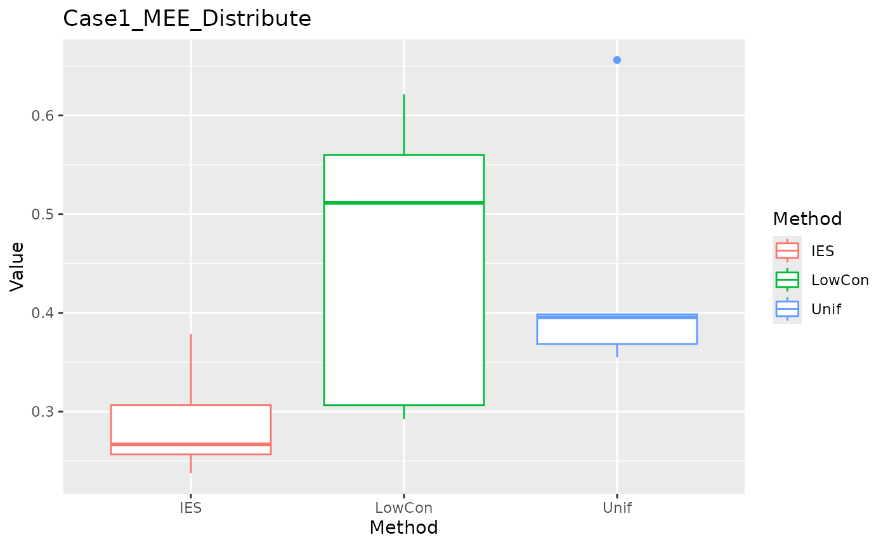
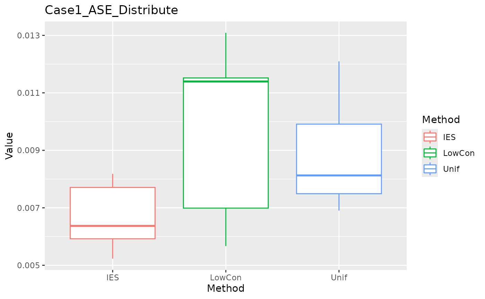
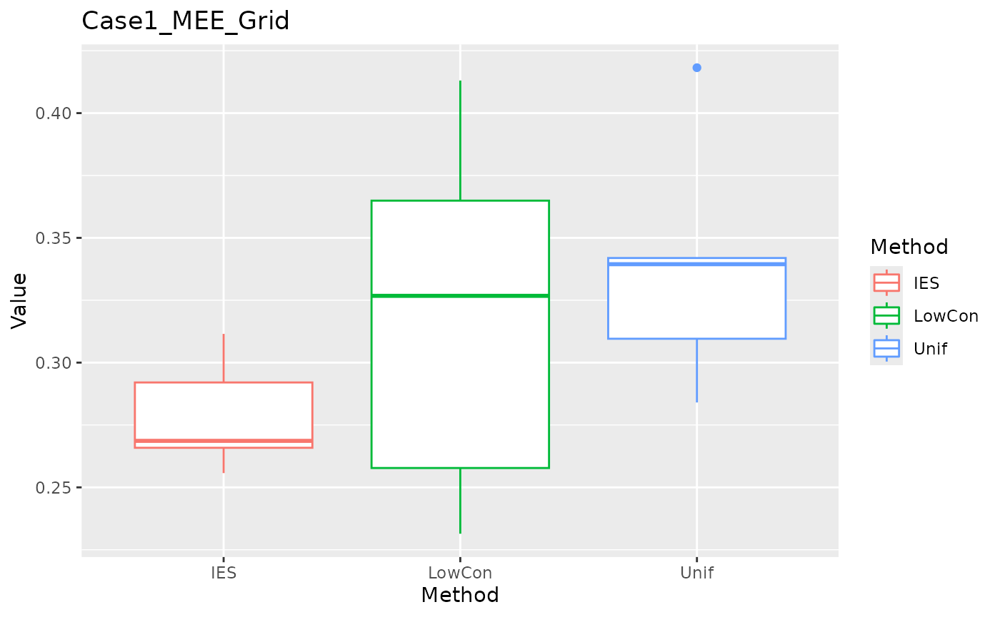
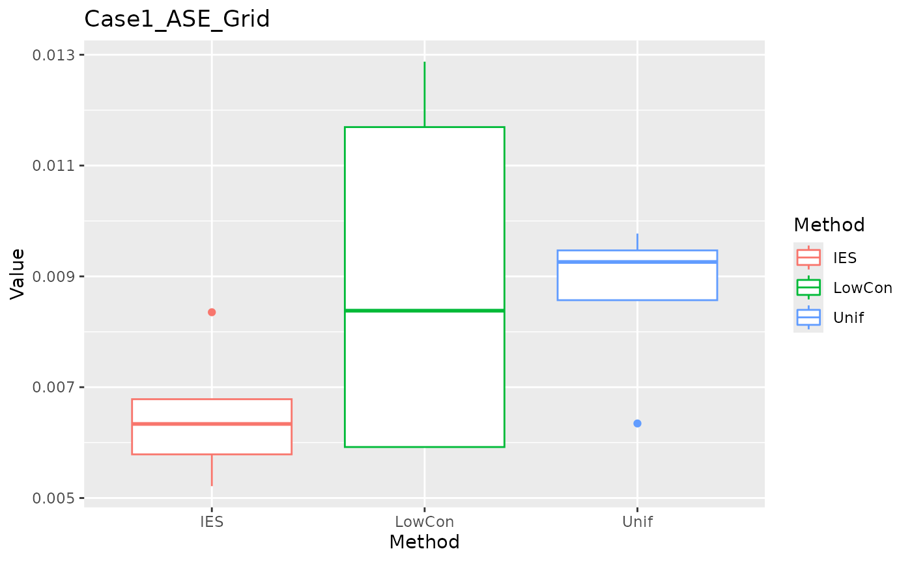
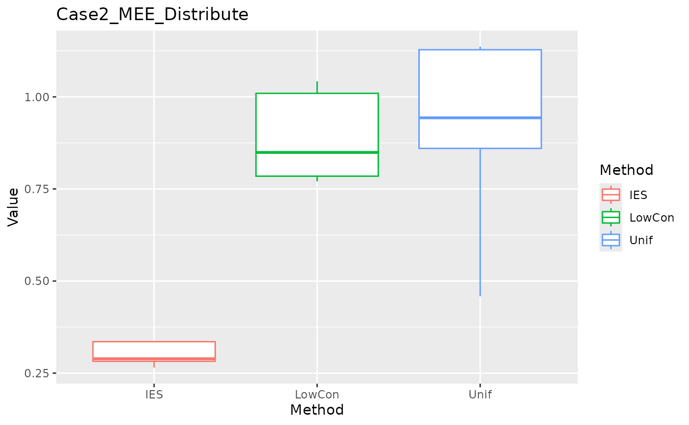
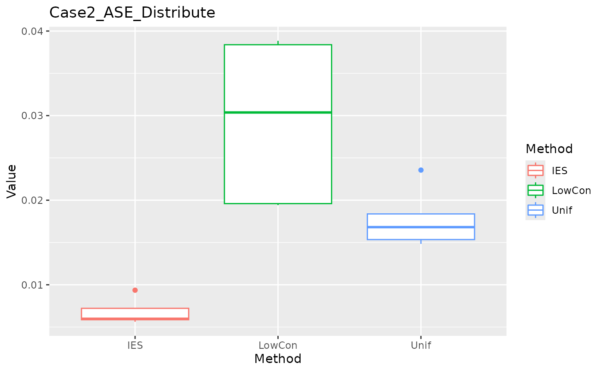
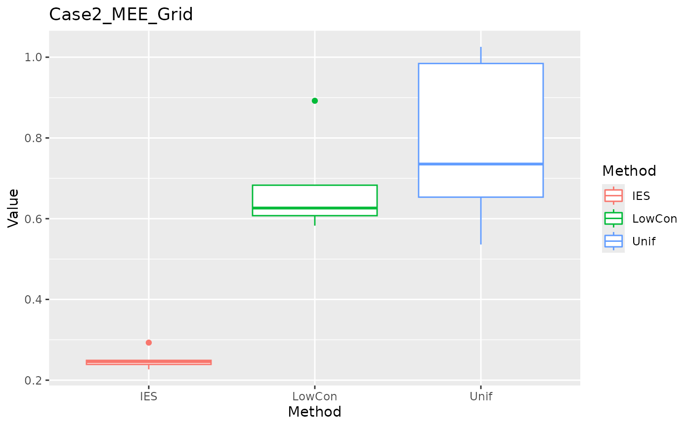
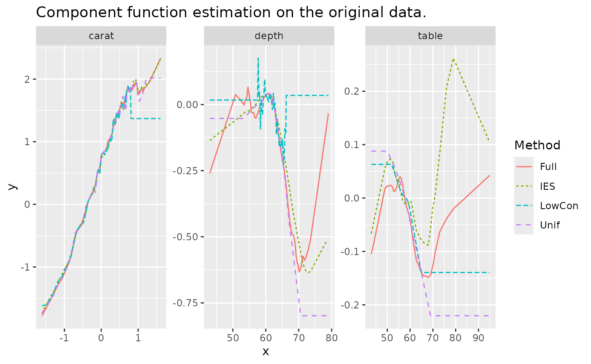

library(dbsubsampling)
library(bench)
library(parallel)
library(gam)
library(purrr)
library(tidyr)
library(dplyr)
library(tibble)
library(ggplot2)Test the compilation environment.
Since this brochure is built from a github remote server, let’s first
test the setup of the server. I’ll write a small snippet of code here to
check if it works on the github remote server. Mainly because
mclapply doesn’t run on windows, in addition to testing to
see if parallel computation is possible and estimating the running
time.
Parallel with 5 cores:
data <- data_IES_Case_1_Train
start_time <- Sys.time()
result <- mclapply(1:50000, function(x) lm(y ~. , data = data)[["coefficients"]][1], mc.cores = 5)
print(Sys.time() - start_time)
#> Time difference of 40.82492 secsWe don’t know how many cores the remote server can assign us. After trying, the remote server did assign us multiple cores, and five cores seemed to be the fastest and most locally appropriate number.
Implement with R or Rcpp
Seed Setting
IES is not a absolutely deterministic sampling method, pay attention to the setting of random seeds.
Compare Running Time
We have some problem in setting random seed between R and C++, so we
cannot directly check whether the results of R and Rcpp are same. If we
change all the random steps to pick the first
element(r_IES_compare and c_IES_compare), we
get the same result of R and Rcpp, this proves the correctness of the
codes. We can compare the running time of R and Rcpp (In fact is
RcppArmadillo):
X_compare <- dbsubsampling::data_IES_Case_1_Train[, c("X1", "X2", "X3")]
n <- 1000; q <- 16;
bench_result <- bench::mark(
dbsubsampling::r_IES_compare(X_compare, n, q),
dbsubsampling::c_IES_compare(X_compare, n, q),
iterations = 10
)
bench_result[c("expression", "min", "median", "mem_alloc", "n_gc")]
#> # A tibble: 2 × 4
#> expression min median mem_alloc
#> <bch:expr> <bch:tm> <bch:tm> <bch:byt>
#> 1 dbsubsampling::r_IES_compare(X_compare, n, q) 19.7s 19.7s 1.1GB
#> 2 dbsubsampling::c_IES_compare(X_compare, n, q) 109.4ms 110ms 1.52MBRcppArmadillo greatly improves speed. We use RcppArmadillo in the main function.
Addition compare
The authors of IES wrote a sampling program in python, and we roughly compare:
reticulate::source_python("/Users/jie/Desktop/IES/IES_supp/ies.py")
get.lat= function(x, snew=16) {
s0=max(x)-min(x)
lat=floor((x-min(x))/(s0/snew))
lat[lat==snew]=snew-1
lat
}
py_IES <- function(x, k){
xl=apply(x,2,get.lat)
n = nrow(x)
initial=c(sample(1:n,1))
ies=Uclab(xl,k,ini=initial-1)+1
return(ies)
}
system.time(lapply(1:10, function(i) py_IES(X_case1,n)))
# user system elapsed
# 2.506 0.435 2.956
system.time(lapply(1:10, function(i) c_IES(X_case1,n,q=16)))
# user system elapsed
# 0.374 0.001 0.376
system.time(lapply(1:10, function(i) r_IES(X_case1,n,q=16)))
# user system elapsed
# 77.587 0.665 78.636 We can see that python is not as fast as C++, but much faster than R. (The reason we simply output the results without running this code is because of the complexity of the additional setup required to use python programs in a package.)
Numeric Simulation
Data Description
We use functions \(m_1\) \(m_2\), and \(m_3\) present three component functions.
gene_data generates data from distributions.
gene_grid_data generates data from the grid. Concretely,
the response are generated by: \[
y = m(X) + \epsilon,
\] where \[
m(X) = m_1(X_1) + m_2(X_2) + m_3(X_3) = \frac{8}{4 + X_1} +
\frac{\exp(3-X^2_2)}{4} + 1.5\sin(\frac{\pi}{2}X_3),
\] and \(\epsilon\) follows
\(N(0, \sigma^2)\), the variance is
\(\sigma^2=0.25\).
Case1: (
gene_dataparameterdistribute = "normal") \(x\) generates from truncated multivariate normal distribution \(TN(0, \Sigma, -2, 2)\) , with mean zero and covariance matrix \(\Sigma=(0.3^{\mathbb{1}(i \ne j)})\) , and each predictor lies in \([-2, 2]\). (use functionTruncatedNormal::rtmvnorm.)Case2: (
gene_dataparameterdistribute = "exp") \(x\) generates from truncated multivariate exponential distribution with same covariance matrix in case 1. The marginal distribution is exponential distribution with rate 1, and is truncated by 4 and translated to \([-2, 2]\). (use R packagecopulawith functionellipCopulaandrCopula. )
There two test data sets:
Grid: The grid are consist of \(10^6\) points with each predictor spanning at 100 evenly spaced points in \([-1.75, 1.75]\).
Distribution: random sample with 5000 points generated from the same distribution as the full data.
m1 <- function(x) {
8 / (4 + x)
}
m2 <- function(x) {
exp(3 - x^2) / 4
}
m3 <- function(x) {
1.5*sin(pi / 2 * x)
}
trans_exp_data <- function(density, lower, upper) {
out <- qexp( pexp(lower) + density*(pexp(upper) - pexp(lower)) )
return(out)
}
gene_data <- function(N, rho, lower, upper, sd, distribute = "normal") {
cov <- matrix(rho, 3, 3) + diag(1-rho, 3)
if (distribute == "normal") {
x <- TruncatedNormal::rtmvnorm(N, rep(0, 3), cov, lb = rep(lower, 3), ub = rep(upper, 3))
} else if (distribute == "exp") {
copula_def <- copula::ellipCopula(family = "normal", dim = 3, dispstr = "ex", param = rho)
temp_quan <- copula::rCopula(N, copula_def)
x <- apply(temp_quan, 2, trans_exp_data, 0, (upper-lower)) - (upper-lower)/2
}
colnames(x) <- c("X1", "X2", "X3")
m <- 1 + m1(x[, "X1"]) + m2(x[, "X2"]) + m3(x[, "X3"])
epi <- rnorm(N, 0, sd)
y <- m + epi
data <- as.data.frame(cbind(x, m = m , y = y))
return(data)
}
gene_grid_data <- function(lower, upper, one_dim_length, sd) {
one_dim_seq <- seq(lower, upper, length.out = one_dim_length)
x <- expand.grid(X1 = one_dim_seq, X2 = one_dim_seq, X3 = one_dim_seq, KEEP.OUT.ATTRS = FALSE)
m <- 1 + m1(x[, "X1"]) + m2(x[, "X2"]) + m3(x[, "X3"])
n_data <- nrow(x)
epi <- rnorm(n_data, 0, sd)
y <- m + epi
data <- as.data.frame(cbind(x, m = m , y = y))
return(data)
}We write some auxiliary functions to implement cross validation(CV) and get evaluation measures.
-
asecomputes average squared error
\[ \text{ASE}= \sum_{x \in \mathcal{X}_{test}} (\hat{m}(x)-m(x))^2 / \left| \mathcal{X}_{test} \right| \]
-
meecomputes maximum estimation error:
\[ \text{MEE} = \max_{x \in \mathcal{X}_{test}} \left| \hat{m}(x) - m(x) \right| \]
create_foldscreate folds for CV.-
get_opt_hget the optimal bandwidth (in fact isspanparameter in functiongam::gam).This is the most time-consuming step in the entire procedure. I had try to use
applyto substituteforloop inget_opt_h, it didn’t lead to significant improvements.If
handle_outlier=TRUE, find the index of the first occurrence of the maximum and minimum values from each predictor, and move these data from the test set to the training set.
get_resultprovide a unified surface to get MEE and ASE in the two test data sets.
The full data size is \(N=10000\) with \(p=3\) predictors. Hyper-parameter is set to \(q=16\). The bandwidth is searched in \(\{0.05, 0.1, \dots, 0.95\}\) for every predictor and chosen by five-fold CV. Each method are trained on subsamples \(n=1000\) , and evaluated on the two test sets with size \(10^6\) (grid) and 5000 (distribute).
N <- 10000; n <- 1000; test_distribute_num <- 5000;
p <- 3; lower <- -2; upper <- 2; rho <- 0.3; sd = 0.5; K <- 5;
one_dim_seq <- seq(0.05, 0.95, length.out = 10)
h_grid <- expand.grid(one_dim_seq, one_dim_seq, one_dim_seq, KEEP.OUT.ATTRS = FALSE)To save time, We repeat the simulation \(S=5\) times.
In each simulation we generate new full data and new test data.
Although both IES and LowCon carry randomness (IES due to random selection of initial values and LowCon due to the initial space-filling design being randomly constructed). However, the randomness is not significant, it can be approximated to a deterministic approach, so the dataset is considered here to be regenerated each time.
We tried using the same dataset across simulations and found that similar results were obtained, but IES consistently outperforming the other methods on MEE and ASE.
LowCon need a space-filling design, we may need try to use the different initial designs.
Here for
LowConwe used thelhs::randomLHDfunction to generate the space-filling design. The original IES simulation used the Sobol sequence to generate the space-filling design (spacefillr::generate_sobol_owen_set). Sobol seems better, at least need less time implies faster convergence.
Here for LowCon we used the randomLHD function to
generate the space-filling design, the original IES simulation used the
Sobol sequence to generate the space-filling design. Upon our attempts
we found that there is little difference in the effectiveness of these
two initial designs.
The package pbmcapply which based on
parallel but provides progress bar to monitor the running
process. The pbmcapply::pbmclapply function runs in
forking mode on 5 cores (forking
approach only works on POSIX systems (Mac, Linux, Unix, BSD) and not
Windows).
We didn’t consider extrapolation in numeric simulation. Although the support of the model based on subsamples is smaller, the range of the grid test set is set far away from the boundary, and it is unlikely to be outside the boundary. The distributed test set is similar to the training set, and there are fewer points at the boundary. There won’t be a huge error.
Case 1: Truncated Normal Distribution
We compute the simulation result in case 1 and plot barplots of MEE and ASE in the two test datasets based on three subsampling methods:
Unif: Random sampling without replacement.LowCon: LowCon (LowCon: A Design-based Subsampling Approach in a Misspecified Linear Model).IES: IES (Independence-Encouraging Subsampling for Nonparametric Additive Models).
test_grid <- gene_grid_data(lower = -1.75, upper = 1.75,
one_dim_length = 100, sd = 0.25)
get_combine_result <- function(i) {
data_train <- gene_data(N, rho, lower, upper, sd, "normal")
test_distribute <- gene_data(test_distribute_num, rho, lower, upper, sd, "normal")
rbind(get_result("Unif", data_train, n, K, h_grid, test_distribute, test_grid),
get_result("LowCon", data_train, n, K, h_grid, test_distribute, test_grid),
get_result("IES", data_train, n, K, h_grid, test_distribute, test_grid))
}
Case1_time_start <- Sys.time()
result_case_1 <- parallel::mclapply(1:5, get_combine_result, mc.cores = 5)
print(Sys.time() - Case1_time_start)
#> Time difference of 19.1164 mins
result <- do.call(rbind, result_case_1) %>%
as.data.frame() %>%
dplyr::mutate(dplyr::across(!Method, as.double),
Method = factor(Method)) %>%
tidyr::pivot_longer(!Method, names_to = "Measure", values_to = "Value")Distribution Testset
MEE in distribution test set:
ggplot(data = dplyr::filter(result, Measure == "MEE_distribute"), aes(x = Method, y = Value, color = Method)) +
geom_boxplot() + ggtitle("Case1_MEE_Distribute")
ASE in distribution test set.
ggplot(data = dplyr::filter(result, Measure == "ASE_distribute"), aes(x = Method, y = Value, color = Method)) +
geom_boxplot() + ggtitle("Case1_ASE_Distribute")
Grid Testset
MEE in grid test set.
ggplot(data = dplyr::filter(result, Measure == "MEE_grid"), aes(x = Method, y = Value, color = Method)) +
geom_boxplot() + ggtitle("Case1_MEE_Grid")
ASE in grid test set.
ggplot(data = dplyr::filter(result, Measure == "ASE_grid"), aes(x = Method, y = Value, color = Method)) +
geom_boxplot() + ggtitle("Case1_ASE_Grid")
We can see that IES performs consistently well on MEE, but slightly worse on ASE. This is reasonable given the nature of IES itself.
Case2: Truncated Exponential Distribution
We compute the simulation result in case 2 and plot barplots of MEE and ASE in the two test datasets based on three subsampling methods.
get_combine_result <- function(i) {
data_train <- gene_data(N, rho, lower, upper, sd, "exp")
test_distribute <- gene_data(test_distribute_num, rho, lower, upper, sd, "exp")
rbind(get_result("Unif", data_train, n, K, h_grid, test_distribute, test_grid),
get_result("LowCon", data_train, n, K, h_grid, test_distribute, test_grid),
get_result("IES", data_train, n, K, h_grid, test_distribute, test_grid))
}
Case2_time_start <- Sys.time()
result_case_2 <- parallel::mclapply(1:5, get_combine_result, mc.cores = 5)
print(Sys.time() - Case2_time_start)
#> Time difference of 22.27652 mins
result <- do.call(rbind, result_case_2) %>%
as.data.frame() %>%
dplyr::mutate(dplyr::across(!Method, as.double),
Method = factor(Method)) %>%
tidyr::pivot_longer(!Method, names_to = "Measure", values_to = "Value")Distribution Testset
MEE in distribution test set:
ggplot(data = dplyr::filter(result, Measure == "MEE_distribute"), aes(x = Method, y = Value, color = Method)) +
geom_boxplot() + ggtitle("Case2_MEE_Distribute")
ASE in distribution test set:
ggplot(data = dplyr::filter(result, Measure == "ASE_distribute"), aes(x = Method, y = Value, color = Method)) +
geom_boxplot() + ggtitle("Case2_ASE_Distribute")
Grid Testset
MEE in grid test set.
ggplot(data = dplyr::filter(result, Measure == "MEE_grid"), aes(x = Method, y = Value, color = Method)) +
geom_boxplot() + ggtitle("Case2_MEE_Grid")
ASE in grid test set.
ggplot(data = dplyr::filter(result, Measure == "ASE_grid"), aes(x = Method, y = Value, color = Method)) +
geom_boxplot() + ggtitle("Case2_ASE_Grid")In the Case2 exponential distribution, IES performs consistently well on both MEE and ASE. This implies IES performs better in biased distribution?
Real Case
Description
We use the diaomonds data set inggplot2
package. Involving three numeric variables carat,
depth and table as predictors, set
price as response and implement log transform to
carat and price.
real_train <- ggplot2::diamonds |>
dplyr::filter(x !=0 & y != 0 & z != 0) |>
dplyr::select(carat, depth, table, y = price) |>
dplyr::mutate(carat = log(carat), y = log(y))We get four models based on the full data and three subsample methods (set \(n=5000\) ) to observe the estimation of the component functions. We still use five-folds cross validation to get the optimal bandwidth and the search space is same as numerical simulation. Hyper-parameter is stall set to \(q=16\).
When get the optimal bandwidth, we set the
handle_outlier=TRUE. This ensures that the boundary of each
predictor in the training set has a value, otherwise the range of
application of the model is too small, resulting in poor results. (In
numeric simulation, we didn’t consider handle outliers)
N <- nrow(real_train); n <- 5000;
q = 16; K = 5; x_name <- c("carat", "depth", "table")
one_dim_seq <- seq(0.05, 0.95, length.out = 10)
h_grid <- expand.grid(one_dim_seq, one_dim_seq, one_dim_seq, KEEP.OUT.ATTRS = FALSE)
index <- list(
Full = 1:N,
Unif = sample(1:N, n),
LowCon = dbsubsampling::LowCon(real_train[,c("carat", "depth", "table")], n, theta=1),
IES = dbsubsampling::IES(real_train[,c("carat", "depth", "table")], n, q))
real_cv_time <- Sys.time()
h_opt <- purrr::map(index,
function(.index)
suppressWarnings(
get_opt_h(h_grid, real_train[.index,], K,
x_name = x_name, y_name = "y",
handle_outlier = TRUE)))
print(Sys.time() - real_cv_time)
#> Time difference of 14.18193 minsEstimate component function
We use gam::predict.Gam function and set the parameter
type = "terms" to get the estimation of regression function
of each predictor. And after obtaining the estimate we centralize each
regression function.
Here we use two sets for testing, one with the training set itself as the test set, and the other consisting of a grid of three variable values. (\(50 \times 50 \times 50\) points in \([-1.6, 1.6] \times [43, 79] \times [43, 95]\))
Due to the small sample size of the subsample, the model fitted on it
has a small scope of application, we extrapolated the values outside the
scope (use termwise nearest neighbor estimation, in fact, is to replace
the values outside the boundary with the boundary values). Estimates
outside the boundary are very inaccurate without extrapolation,
especially for Unif and LowCon
(IES have wider boundaries due to one-dimensional
uniformity).
get_interval <- function(data, index, x_name) {
x <- data[, x_name]
subdata <- x[index, ]
interval <- apply(subdata, 2, range)
return(interval)
}
extrapolation <- function(data, interval, x_name) {
x <- data[, x_name]
for (j in 1:ncol(x)) {
x[,j][x[,j] < interval[1,j]] <- interval[1,j]
x[,j][x[,j] > interval[2,j]] <- interval[2,j]
}
data[, x_name] <- x
return(data)
}
model <- purrr::map2(h_opt, index, function(.h, .index) {
opt_formula <- formula(y ~
lo(carat, span = .h[1], degree = 1) +
lo(depth, span = .h[2], degree = 1) +
lo(table, span = .h[3], degree = 1))
gam::gam(opt_formula, data = real_train[.index,])
})
interval <- purrr::map(index, function(.index)
get_interval(real_train, .index, x_name))
extrapolation_ori_data <- purrr::map(interval,
function(.interval)
extrapolation(real_train, .interval, x_name))
predict_ori_data <- purrr::map2(model, extrapolation_ori_data,
function(.model, .data)
predict.Gam(.model, .data, type = "terms"))
real_grid <- expand.grid(carat = seq(-1.6, 1.6, length.out = 50),
depth = seq(43, 79, length.out = 50),
table = seq(43, 95, length.out = 50),
KEEP.OUT.ATTRS = FALSE)
extrapolation_grid_data <- purrr::map(interval,
function(.interval)
extrapolation(real_grid, .interval, x_name))
predict_grid_data <- purrr::map2(model, extrapolation_grid_data,
function(.model, .data)
predict.Gam(.model, .data, type = "terms"))
ori_predict <- predict_ori_data %>%
purrr::map(scale, center = TRUE, scale = FALSE) %>%
purrr::map(as.data.frame) %>%
purrr::map(rename, y_carat = "lo(carat, span = .h[1], degree = 1)",
y_depth = "lo(depth, span = .h[2], degree = 1)",
y_table = "lo(table, span = .h[3], degree = 1)") %>%
dplyr::bind_rows(.id = "Method") %>%
tibble::remove_rownames() %>%
cbind(rbind(real_train, real_train, real_train, real_train)) %>%
dplyr::rename(x_carat = carat, x_depth = depth, x_table = table) %>%
dplyr::select(-y) %>%
tidyr::pivot_longer(!Method, names_to = c(".value", "Variable"), names_sep = "_")
grid_predict <- predict_grid_data %>%
purrr::map(scale, center = TRUE, scale = FALSE) %>%
purrr::map(as.data.frame) %>%
purrr::map(rename, y_carat = "lo(carat, span = .h[1], degree = 1)",
y_depth = "lo(depth, span = .h[2], degree = 1)",
y_table = "lo(table, span = .h[3], degree = 1)") %>%
dplyr::bind_rows(.id = "Method") %>%
tibble::remove_rownames() %>%
cbind(rbind(real_grid, real_grid, real_grid, real_grid)) %>%
dplyr::rename(x_carat = carat, x_depth = depth, x_table = table) %>%
tidyr::pivot_longer(!Method, names_to = c(".value", "Variable"), names_sep = "_")We plot the estimate of three component functions on distribution
test set. We can see that LowCon performs the worst and is
close to non-convergence. Unif also performed poorly,
especially at the border. IES performed the best and most
closely with the full sample.
ori_predict %>%
ggplot(aes(x = x, y = y, group = Method, color = Method, linetype = Method)) +
geom_line() +
facet_wrap(~Variable, scales = "free") +
ggtitle("Component function estimation on the original data.")
And the estimate of three component functions on grid testset which has similar performance with distribution testset.
Compute measures
We compare the MEE and ASE on the grid and original data under models based on different subsample and full data. There is no real response on the grid test set, so we use the estimate obtained from the model based on full data as the response.
Extrapolation is carried out not only when drawing graphs, but also
when calculating measures, otherwise the values of MEE and ASE will be
extremely large (especially LowCon and
Unif).
y_ori <- real_train[["y"]]
y_grid <- predict.Gam(model[["Full"]], real_grid)
predict_extra_ori <- purrr::map2(model, extrapolation_ori_data, predict.Gam)
predict_extra_grid <- purrr::map2(model, extrapolation_grid_data, predict.Gam)
extra_measure <- bind_cols(
Measure = c("MEE_Ori", "ASE_Ori", "MEE_Grid", "ASE_Grid"),
dplyr::bind_rows(purrr::map_dbl(predict_extra_ori, mee, y_ori),
purrr::map_dbl(predict_extra_ori, ase, y_ori),
purrr::map_dbl(predict_extra_grid, mee, y_grid),
purrr::map_dbl(predict_extra_grid, ase, y_grid))) %>%
tidyr::pivot_longer(!Measure, names_to = "Method", values_to = "Value")
extra_measure %>%
ggplot(aes(y = Method, x = Value)) +
geom_bar(stat = "identity") +
facet_wrap(~Measure, scales = "free")IES performed consistently well on MEE. ASE performs better on the grid test set and worse on the distribution test set (possibly due to data leakage). This is in line with our expectations.
We have reproduced only some of the IES simulations here, and others are subject to subsequent refinement.